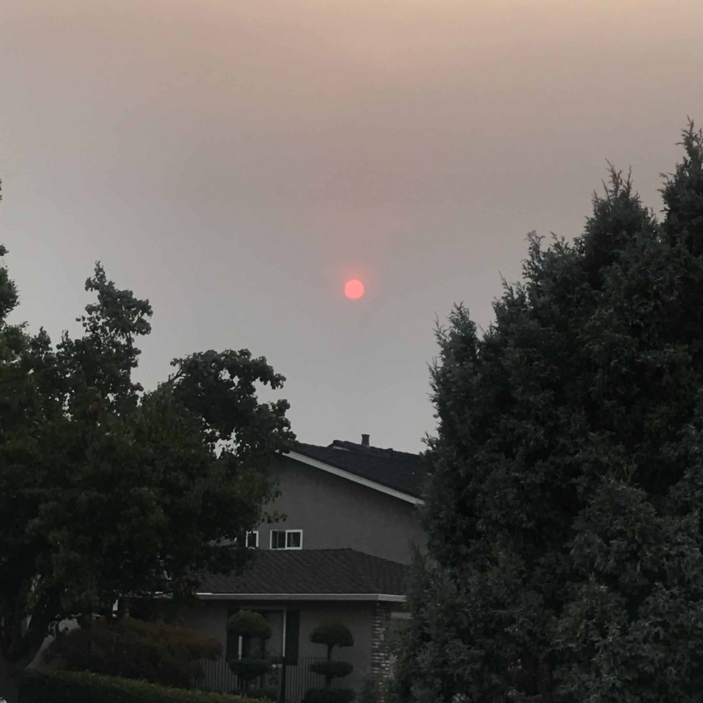

Game Design UX Best Practices
February 23rd, 2021
This article “Game Design UX Best Practices” was such an interesting read. After reading through the article, it seemed like a lot of the practices mentioned were based on creating a pleasant user experience, so users would be more likely to spend money on the game or play it for longer. I did not know that ‘dark-UX’ was even a term until reading this article. It kind of angered me that placement of ads and buttons are to encourage users to accidentally press on it or to increase the chances of them engaging with it. This is because I was a victim of this many times. However, at the same time it makes sense as the designer to make these choices to boost usage and revenue of the app. For example, the pop-up section talked about how user decisions that are beneficial to the game should be placed on the right side, whereas bad decisions are on the left side. I never even noticed this design pattern, but it makes perfect sense since most users are right-handed.
Visual Thinking Analysis 1
February 11th, 2021
 Shirley Wong, 2019
Shirley Wong, 2019
I think this image is interesting because it has a cohesive color scheme. I used the blue to put emphasis on the headers and the letters for the days of the week. That month’s theme was old school Internet Explorer, so I made the boxes on the side look like pop-ups. The days of the week also have the arrow like the desktop icons on Internet Explorer do. This image relates to the topic of my collection because it is all about my obsession with stationery and I typically use all of those items to journal with! For example, the highlighter pen in this picture is what I used as the accent color for this page of my journal. My collection shows my obsession with all things stationery related and my journey with bullet journaling. Bullet journaling was one of my main creative outlets for the past few years and it was always a very relaxing activity that made time fly by. Having a pretty space to write down my tasks and assignments, track my habits, etc. helped me stay organized and stay on top of everything.
Visual Thinking Analysis 2
February 11th, 2021

Emily Gui, 2021
This image is of a red sun sitting low in a hazy sky and in the foreground is a house with some foliage. Some of the most interesting aspects of this image are how the color of the sky and sun gives the entire image a very ominous feel to it. Rarely do I ever see the sun and the sky that color, so it makes me wonder what could have happened to cause the sky and sun to look like that. (Possibly smoke from the wildfires?) Because everything else in the foreground has very muted colors, my attention immediately goes to the piercing red sun that gives the entire image a very mysterious feel to it. The most obvious aspects of this image is the fact that there is a red sun in the sky above a house surrounded by trees, but the interesting thing is the mysterious feeling I get from looking at it.
Fun Web Animations and Interactions
February 4th, 2021
I looked at Milkshake Studio’s website called “A (CHAOTIC) Year in Review.” As soon as I arrived at the main landing page, the numbers that make up “2020” fell from the top of the screen and I found out that the user can interact and push them around. In that first section, I found it cool that when the user hovers over the different numbers, a fun GIF pops up. The entire GIF had a slight wavy effect on hover which made it visually interesting. In the section that showcased the products/projects they worked on in 2020, I thought the way they displayed it was a unique combination of both interaction and use of images. The name of the client was in big bold capital letters and as the user scrolls, it looks as if the color is filling up the letters. At the same time, a few examples of the projects climb up the screen. I thought this image interaction was a really creative way to display the projects, but I did find it a little distracting since I couldn’t really focus on each project individually. In the last section where 2021 predictions were made, I liked how when the user clicked on the paper illustration, the papers got stacked. Then when the user clicks the arrows, the little animation of the paper moving to the bottom of the stack was a nice touch that made it feel as if papers were really being shuffled. This website utilized a lot of creative animations and interactions as the user scrolled down the page. It all helped to make the overall page more interactive and interesting.
Best Modal Window Design Practices
January 28th, 2021
Prior to reading the article, “Best practices for Modals/Overlays/Dialog Windows,” I typically associated modal windows with being used for annoying pop-ups that you see right when you arrive on a webpage or when you are about to leave a webpage. It was interesting to see that modal windows could be used for functional purposes like composing a new tweet on Twitter or to be used for logging in to your account. I think I am so used to modal windows being annoying that I forget that they can be useful. The points the article discussed about the anatomy of a modal window made me realize designing for accessibility is important when it comes to modal windows. Allowing users to not only be able to press a cancel button to close a modal, but also have keyboard accessible control is essential. This way keyboard users can easily have access to the content and different fields within the overlay. This is similar to when designing a form. It is important to take into account that some users will use the “Tab” key to go from one field to the next. Having clearly labeled buttons that lead to modals that match what the label said is key because you don’t want your users to be surprised with irrelevant content. If designed correctly, modals can positively add to the user experience.
Form Design Practices to Make Your Form Not Suck
January 21st, 2021
From personal experience, forms are a usability nightmare. They either are confusing to follow or annoying to use. I never realized how many aspects of the form designers have to consider when designing a form until reading this article. It seems that a lot of the best practices have to do with handling errors, creating a smooth user flow, and improving the functionality/usability of the form. As I was reading the article, I realized that I overlook many of these design choices used in forms that I may use everyday. For example, the fact that inline labels are typically only used for search bars or straightforward fields for usernames and passwords. A design choice as simple as where the labels are located has a big impact on how the user interacts with the form. All these practices that this article discusses are things I find important to know as a designer and will definitely take into consideration when designing forms in the future.
Things I will focus on when designing forms is having a minimal design that allows users to quickly understand what is being asked of them, like having a one column layout and having labels positioned above the input fields. As for more general practices, I will use colors to make forms more accessible, such as having good contrasting colors that make it easy to read.